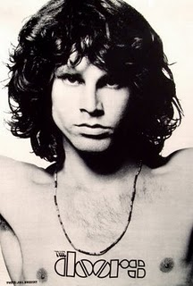
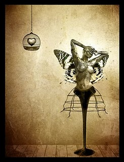
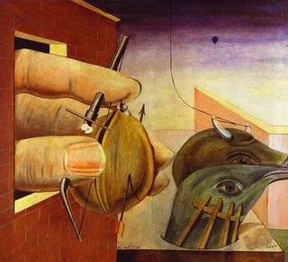
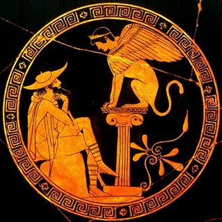

Jim Morrison’da Oedipus Kompleksi Bilmecesi
1965 yazında Venice plajında Ray Manzarek ve Jim Morrision adlı iki taze üniversite mezunu bir rock’n roll grubu kurudular. Grubun ismi William Blake tarafından vaftiz edildi: “Evrende, bildiğimiz şeyler var, ve bilmediğimiz şeyler, ve ikisinin arasında kapılar (Doors)” ve grubun ismi “The Doors” kondu, bilinen ve bilinmeyen arasındaki kapı. Aldous Huxley’in “Algının Kapı”ları (Doors of Perception) da şahitlerdendi. Grubu kurduklarında Jim Romalı bir mum gibi olmak istediğini söyler, parlak bir ışık yayıp sonra kaybolmak. Bunu gerçekten de yapar. The doors dünyadaki bir numaralı rock grubu olur ve Jim Morrison 27 yaşında aniden ölür, ya da Romalı bir mum gibi kaybolur. Jim’in en ilginç yanlarından biri de insanlara oyunlar oynaması ve garip şeyler yapmasıydı ki bunların çoğu insanlar tarafından yanlış anlaşılır ve onları deli ederdi. Bunlardan her halde en ünlüsü “The End” isimli şarkılarının sonundaki Oedipal bölüm. Bu yazıda o oedipal bölümün aslında Jim’in psikolojisinden çok Jim’in ‘sınırları ve tabuları zorlarsan ne olur’ merakının bir ürünü olduğunu göstermeye çalışacağım.
Jim’in bir rock starı olmadan önceki kişiliği ve ilgi alanları güzel bir başlangıç noktası. Jim Morrison 8 Aralık 1943’de Melbourne’da, amerikan donanmasında çalışan baba Steve Morison ve anne Clara Clarke’in çocuğu olarak dünyaya geldi. İleri düzeyde bir zekaya sahipti, IQ testinde 149 puan aldığı ve skorunun Einstein’inkinden 1 puan daha yüksek olduğu söylenir. IQ’sunu bilemeyeceğim ama, daha lisedeyken odasının duvarı kitaplarla kaplıdır. Bu lise yıllarında çok kitap okur ve bu kitapların çoğunun ismileri hocaları tarafından bile bilinmez. O dönemlerde en favori yazarları Nietzsche, Plutarch, Rimbaud, Kerouac, Ginsberg ve McClure. Nietzsche her zaman Jim’in yaşam felsefesinde ana kahraman olduysa da, Rimbaud ve diğer Beatnik yazarlar Jim’in şiirine esin kaynağı oldular.
Lise yıllarından sonra Jim UCLA’e sinema okumaya gitti. Üniversite yıllarında, arkadaşları ile sürekli Nietszche hakkında konuşur, tartışırlardı, “Trajedyanin doğuşunu” ellerinden düşürmeden. Jim daha o zamanlardan kendini şarabın ve tiyatronun tanrısı Dionysus ile özdeşleştirmişti ki bu özdeşleştirme hayatı boyunca evam etti. Bu devrelerde başka bir muhabbet konuları da psikolojiydi. Arkadaşları Freud’un öğrencisi olan Jung’un yazılarına bayılıyorlardı. Oysa Jim başka bir öğrencisini, Sandor Ferenczi’yi savunuyordu ki Ferenczi Freud’un teorilerine radikal olarak karşı çıkmış, özellikle de Oedipus kompleksinin yorumlanmasına, ki kendisi Freud tarafından gruptan uzaklaştırılmış bir psikologdur.
Jim’in karakterinin bir önemli yanı da başka insanlara oyunlar oynamasıdır. Bu oyuncul kişiliğine bir sürü örnek var. Lisedeyken hiç tanımadığı bir kıza gider, önünde eğilip 18yy romantik şiirlerinden okumaya başlar ya da başka bir seferinde sınıfta oradan oraya koşarak hayali bir arıyı kovalar. Bir rock yıldızı olduğunda da medyaya oyunlar oynayarak onları manipule etmeye ve konserlerde garip şeyler yaparak seyirciyi şok etmeye bayılırdı. Arkadaşları Jim’den beklenmez olanı beklemeyi öğrenmişlerdi. Bir kız arkadaşı neden hep böyle oyunlar oynadığı sorduğunda “Oynamasaydım benimle hala ilgilenmezdin” diye cevap verir. Ama oyunlar sadece başka insanların ilgisini çekmek için oynanmıyordu, Jim gerçeklikle oynuyordu çoğunlukla. Bir röportajda bunu itiraf eder: “Sadece gerçeklikle oynuyordum. Ne olucağını merak ediyordum. Evet, sadece merak.” Merak ana sebep olsa da, tek sebep değildi.
Oyunlar Jim’in yaşam felsefesinde önemli bir yere sahipti. O hem bilinen hem de bilinmeyen şeylerle ilgileniyordu ve oyunlar bilinen ve bilinmeyen şeyleri test etmenin tek yoluydu. Oyunlara yaklaşımı iki yönlüydü. Birincisi meraktan doğup kendi gerçek kimliğini saklamasına yardımcı oluyordu. İkicisi ise oyunlar başkalarını tatmin etmeye yarıyordu. Jim’in başkalarının ondan beklentilerini sezinlemek gibi bir yeteneği vardı ve ne istediklerini anladığında bunu onlara vermekden çekinmezdi. Konserlerde seyirciler daha önce hiç yaşamadıkları bir şey deneyimlemek istiyorlardı ve Jim onlara istediklerini veriyordu: deri pantolonlar, mistik bir aura ile bezenmiş mitolojik hikayelerle kutsanmış konserler, cinsel kışkırtmalar vs. Ya da medya sofistike ve sansasyonel söylemler peşindeydi ve Jim onlara “Erotik Politikacılar”, “Rock Öldü”, “Kelebeğin çığlığı” vs. gibi söylemlerle istediklerini fazla fazla verdi. Jim’in oyun takıntısı sinema, tiyatro ve müzik aşkının tetikleyici gücüydü.
Jim ve Ray Manzarek üniversiteyi bitirdikten sonra The Doors’u kurdular. Jim o yazı Venice plajında geçirdi ve bir çok şarkılarının sözlerini orada yazdı. Yazın sonunda Ray ile tanıştığında bir şiirini okudu. Ray şiire bayıldı ve hadi bir rock grubu kuralım dediler, sene 1965. Bir basçı ve davulcu bulduktan sonra ilk demolarını kaydettiler ve sağda solda barlarda çalmaya başladılar, ta ki Los Angeles’daki en popüler bar Whiskey’de iş bulana kadar. Whiskey’de bir yıl çalıştılar, ta ki Jim “The End” isimli şarkılarının ilham verici bir performansını sunana kadar. Performansdan sonra daha o gece Whiskey’deki işlerine son verildi, çünkü Jim şarkıya oedipal bölümü o gece emprovize olarak eklemişti. Seyirciler ve patronları duydukları karşında şok olup öfkelendiler tabi. Ama bir saniye, Jim “The End” deki oedipal bölümle ne demeye çalışıyordu aslında?
“The End” şiirsel sunu olduğu kadar müzikal kompozisyon olan uzun dramatik bir parça. Aslında bir arkadaşa, muhtemelen bir kız arkadaşa,
 veda şarkısı olarak yazılmış. Başlarda da bu hissedilir zaten, şarkı tatlı elveda sözleri ile başlar ve hafif melankolik bir tonda anıları hatırlayıp gelecek zamanlar için umut dolu sözcükler ile devam eder. Ama, hemen onun ardına, şarkı bir anda karanlık ambiansli bir havaya bürünüp mitiolojik ve tarihi semboller sağa sola serpiştirilmeye başlanır. Jim bize umutsuz diyarlarda Romalıların vahşi acılarında kaybolmakdan bahseder. Yaz yağmurunu bekleyen deli çocuklardan bahseder sonra. Bizi kasabanın sınırlarındaki tehlike hakkında uyarır, ki bu muhtemelen insanın dünyasının sınırlarındaki tehlikedir, bilinmeyene ulaşmaya çalışmanın tehlikesi. Bu uyarıdan sonra yolculuk motifi fiziksel ve ruhsal olarak başlar, ki sanırım bu özgürlük arayışı ihtiyacından kaynaklanıyor, ve insanları bilinmeyene götüren, yanı ölüme, mavi otobüsle yolculuk sonlanır. Ama, tam ölümden önce ki bu noktaya işte Jim oedipal bölümü yerleştirir.
veda şarkısı olarak yazılmış. Başlarda da bu hissedilir zaten, şarkı tatlı elveda sözleri ile başlar ve hafif melankolik bir tonda anıları hatırlayıp gelecek zamanlar için umut dolu sözcükler ile devam eder. Ama, hemen onun ardına, şarkı bir anda karanlık ambiansli bir havaya bürünüp mitiolojik ve tarihi semboller sağa sola serpiştirilmeye başlanır. Jim bize umutsuz diyarlarda Romalıların vahşi acılarında kaybolmakdan bahseder. Yaz yağmurunu bekleyen deli çocuklardan bahseder sonra. Bizi kasabanın sınırlarındaki tehlike hakkında uyarır, ki bu muhtemelen insanın dünyasının sınırlarındaki tehlikedir, bilinmeyene ulaşmaya çalışmanın tehlikesi. Bu uyarıdan sonra yolculuk motifi fiziksel ve ruhsal olarak başlar, ki sanırım bu özgürlük arayışı ihtiyacından kaynaklanıyor, ve insanları bilinmeyene götüren, yanı ölüme, mavi otobüsle yolculuk sonlanır. Ama, tam ölümden önce ki bu noktaya işte Jim oedipal bölümü yerleştirir.
Oedipal bölüm bir katil hakkındadır. Katil sabah şafaktan önce kalkar ve antik galeriden bir maske alır kendine. Önce kız kardeşinin odasına gider sonra erkek kardeşini ziyaret eder. Koridorun sonuna yürür ve bir kapıya gelir ve içeri bakar:
Father
Yes son?
I want to kill you
Mother, I want to. . .
Bölüm açıkça Oedipus kompleksine gönderme yapıyor tabi. Antik galeriden alınan yüz, katille yanlışlıkla kendi babasını öldüren ve annesiyle evlenen trajik mitolojik karakter Oedipus’u bağlıyor. Oedipus’un yüzünü seçen katil, Oedipus’un kaderini de bilerek seçip üzerine gider. Katilin babası ve annesiyle yaptığı son diyalog da güçlü ama yine Oedipus’un trajik kaderini bilerek tekrar etme kararlılığını gösteriyor. Bu diyaloğun bir kapının arkasında oluyor olması da ilginç, kapılar bildiğiniz gibi bilinen ve bilinmeyen şeylerin arasında.
Freud’a göre Oedipus kompleksi erken çocukluk döneminin en merkezi fenomeni. Çocuk annesini kendisinin sanıyordur ama bir gün annesinin aslında başka birine ait olduğunu öğrenir, yani babasına. Ama çocuğun annesine olan arzusu tatminiz kaldığı ve hadım edilme tehlikesi yüzünden zamanla oedipus kompleksi çöker ve çözülür. Tabi Freud dahi normal vakalarda kompleksin bilinç dışında bile görünemeyeceğini, ve patolojik durumlarda ancak ve ancak bilinçdışı bir arzu olabiliceğini itiraf eder. Bence Freud’un yaklaşımı “The End” de gördüğümüz Oedipus’un kaderini bilinçli bir biçimde tekrar etme isteğini açıklamaya yardımcı olmuyor. Belki konu ile ilgili başka bir yorum daha iyi bir perspekif verebilir.
Friedrich Nietzsche de Oedipus miti ile ilgilenmişti. Hatta Freud kendi teorisini geliştirirken Nietzsche’in Oedipus mitini yorumlamasından ciddi ölçüde esinlenmişti. Nietzsche oedipus mitinden “Trajedyanın Doğuşu” isimli kitabında bahseder, ilginçtir ki Trajedyanin doğuşu Jim’in en sevdiği kitaplar arasındadır. Yani, “The End” de Nietzsche’den yansımalar görmek pek şaşırtıcı olmaz. Nietzsche Oedipus’u kendini bilmenin coşkulu kahramanı olarak görür. Trajedyanin doğuşunda Oedipus mitini söyle yorumlar:
“Ben bu fikrin ortaya çıkışını Oedipus’un üç kaderinin ürpertici üçlemesinde görüyorum: Doğanın bilmecesini (belirsiz sphinx) çözen adam aynı zamanda en kutsal doğal yasayı da çiğneyip babasını öldürüp annesi ile evleniyor. aslında, mit kulağımıza bilgeliğin -özellikle Dionysian bilgeliğinin- doğaya karşı korkunç ve düşmanca bir şey olduğunu fısıldıyor, bir adam kendi bilgisi ile doğayı yıkıcı bir uçuruma itiyorsa aynı adam kendi içinde doğasının çözülmesini de tecrübe etmek zorunda.”
Nietzsche’in Odeipus miti yorumu Jim’in “The End” de ne yapmaya çalıştığını açıklıyor. Jim kendisini Dionysus ile özdeşlestirmişti, ama bu basit bir taklit değildi onun için. Tam tersine, o daha ileri gitmek ve Dionysian bilgeliğe ulaşmak istiyordu. Ama ona ulaşabilmek için önce en kutsal doğa yasalarını çiğnemek gerekiyordu. Jim Morrison bilgisiyle doğayı hep o yıkıcı uçuruma itmeye çalıştı hayatı boyunca. Oynadığı bütün o oyunlar doğal düzene karşı aşırı bir itaatsizlikten başka bir şey değildi. Ne olacağını merak etmek ve kedini o uçuruma itmek doğanın kendi içinde çözülmesini tecrübe etmek için bilinci bir istekti. Ve “The End” ve Whiskey’deki performansları bu iç kargaşasının metaforik yansımasından başka bir şey değildi. Oedipal bölüm konser esnasında emprovize olarak eklenmeliydi çünkü Jim doğal düzeni o kadar insanın önünde yıkmak istedi ki kendi içindeki çözülmeyi daha güçlü hissedebilsin. Ve tam oraya yerleştirilmeliydi, bilinen ve bilinmeyen arasındaki kapıdan sonra ama ölümden önce. Burası insan bilgisinin sınırı, yanı Dionysian bilgelik, bundan sonra tecrübe edilecek sadece ölüm kalıyor.
Yani Oedipal bölümün Jim’in psikolojisindeki olası bir Oedipus kompleksi ile uzaktan yakından alakası yok. “The End” ustası Nietzsche’nin tavisyelerini dinleyerek Dionysian bilgeliğe ulaşmaya çalışan bir sanatçının ruhundaki kaosun etkileyici bir tablosu. Oedipal bölüm de doğal düzeni metaforik olarak çiğnemek ve kendi içindeki doğanın çözülmesini hissetmek için gerekli olan resmin en önemli fırça darbesi.
NazIm


{kind=link}
{kind=link}
{kind=link}
uzaklardan mektub almıs bir prens gibi hisstim kendimi… güzel yazı, saol.
cemal
insanlar doğar büyür ölür:(
güzel yazı nazım teşekkurler
jim morrison tanrıyla dalga geçen adam…
tanrıyla dalga geçen adam…